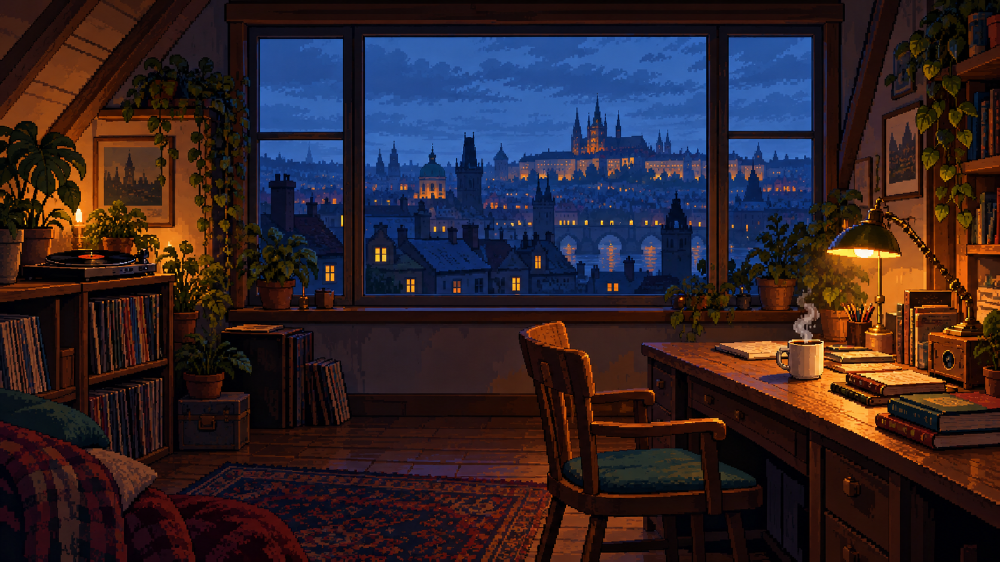

Jazz, houpavé beaty nebo svižnější house. Najdi rytmus pro svoje myšlenky.

Déšť venku. Klid uvnitř.
Malá hudební kavárna pro chvíle, kdy chceš psát kód, číst nebo jen chvíli být.
„Low fidelity“ znamená nižší věrnost zvuku. Tady jsou drobné nedokonalosti součástí nálady: měkké výšky, teplé jazzové akordy, lehce houpavý rytmus a praskání vinylu. Žádné vokály, které by se pletly do myšlenek.
Patnáct původních instrumentálních skladeb ve třech stylech: jazzové lo-fi, houpavý lo-fi hip-hop a svižnější chill house. Piano, nylonová kytara a vibrafon se střídají se syntezátory, basou a bicími. Každá skladba má 32 až 64 taktů s obměnami a plynule se opakuje. Všechny nástroje i zvuky kavárny, vinylu a deště jsou syntetické.
Vyber si pixelartový pokoj v dešti, noční střechu, zasněženou chatu nebo původní kavárnu. Každé prostředí má vlastní animaci a vybírá se nezávisle na hudbě. Pohyb zastavíš tlačítkem v rohu scény; při systémovém omezení animací je ve výchozím stavu vypnutý.
Hudbu si můžeš stáhnout tlačítkem v přehrávači jako WAV. Soubor obsahuje vybranou skladbu bez zvuků pozadí.
Nastavení zůstává v tomto prohlížeči. Bez reklam a bez externích hudebních streamů.